לאמהות שרוצות ביטחון כלכלי אמיתי, אבל פוחדות לאבד את מה שחסכו…
בשיתוף עם בתי ההשקעות והפלטפורמות שעובדות איתנו
ועוד
איך כל אמא בישראל יכולה להפוך כמה מאות שקלים אבודים בחודש להון של מיליונים ולסדר את העתיד של הילדים והמשפחה שלה
״אמא משקיעה״
תכנית של 28 ימים שבסופה יש לך הוראת קבע שרצה כל חודש, מהסכום שהתזרים שלך הגדיר, לתוך הרכב אישי שמתאים למטרות שלך, עם כרית ביטחון במקום נזיל, וכמעט 0 התעסקות
ביטחון שנשען רק על המשכורת הוא ביטחון של דבר אחד. ברגע שההכנסה נעצרת, אין מה שיגבה אותה. לקח לי סגר אחד להבין את זה על הבשר. חיסכון לבד הוא לא רשת ביטחון. רשת ביטחון בונים מכסף שעובד.
וזו לא את
פשוט אף אחד לא לימד אותנו
את אחראית. את חוסכת.
את שומרת על הכסף של המשפחה.
אבל איך משקיעים אותו?
את זה לא לימדו אותנו.
לא בבית, ולא בבית הספר.
זה פער של ידע.
וידע אפשר ללמוד, מהר.
מי לא יודעת את זה? (הלמ"ס, 2024)
נשיםגברים
איך בוחרים מסלול השקעה
נשים
48.4%
גברים
32%
איך מחושבת ריבית
נשים
35.3%
גברים
19.5%
מקור: הסקר החברתי של הלמ"ס 2024, מתוך הרצאה בכנס בנק ישראל, 17.6.2026
ומה קורה כשנשים כן משקיעות?
+1.8%בשנה: התשואה של נשים הייתה גבוהה מזו של גברים, במחקר על 2,800 משקיעים לאורך 3 שנים
45%יותר עסקאות ביצעו גברים, והרוויחו 1.4% פחות בשנה. סבלנות משתלמת.
מקורות: Warwick Business School עם Barclays · Barber & Odean, "Boys Will Be Boys", Quarterly Journal of Economics, 2001
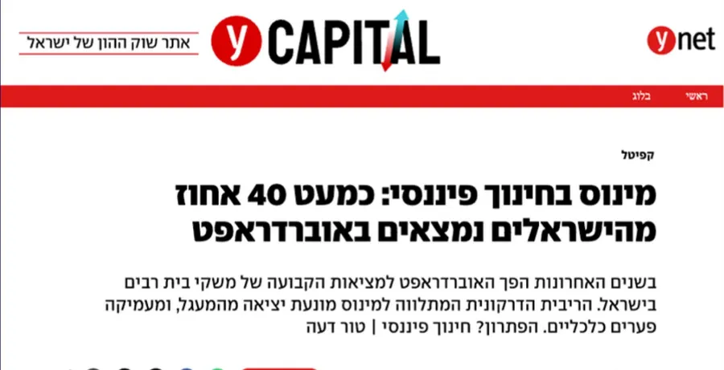
זה לא רק אנחנו. ynet קפיטל: "מינוס בחינוך פיננסי: כמעט 40 אחוז מהישראלים נמצאים באוברדרפט"
נעים להכיר, אני עדי
גם אני הייתי בדיוק שם
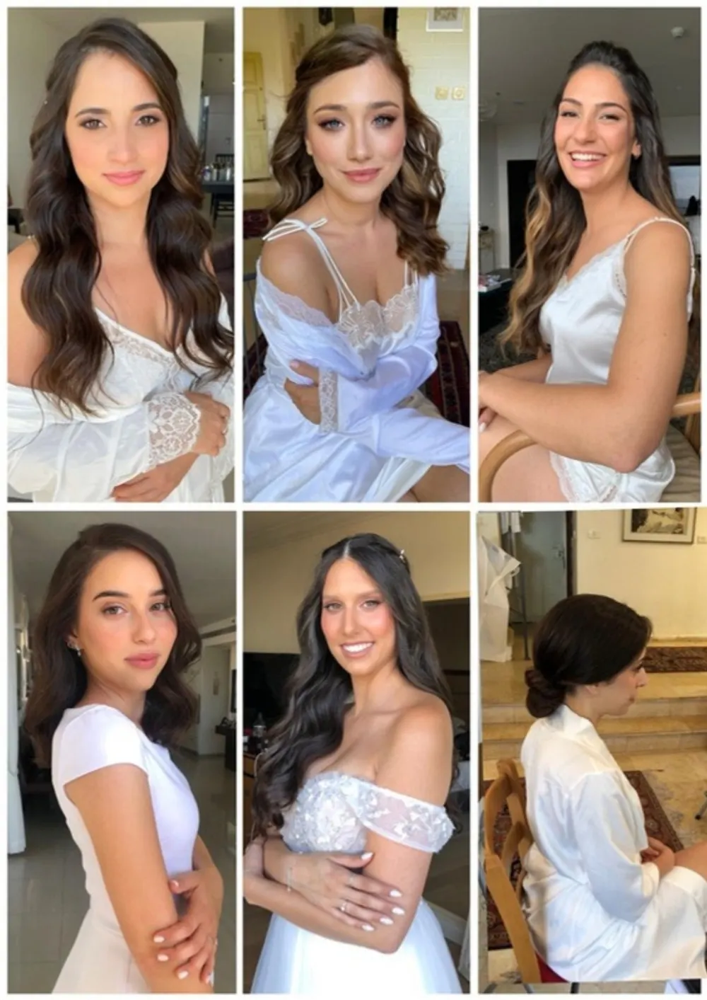
לפני 2020
היה לי עסק לכלות. מלא ועמוס. חשבתי שזה הביטחון של המשפחה שלנו.
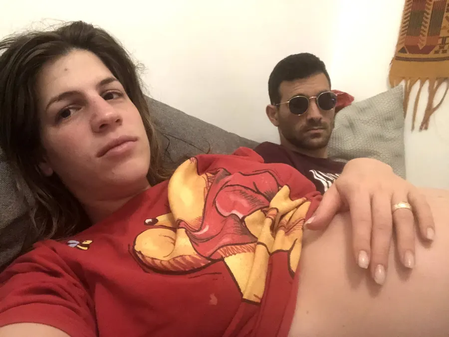
מרץ 2020
הייתי בהיריון הראשון, ונכנסנו לסגר הראשון. העסק שלי נעצר ביום אחד, וכל הביטחון שחשבתי שיש לי נעלם ברגע.
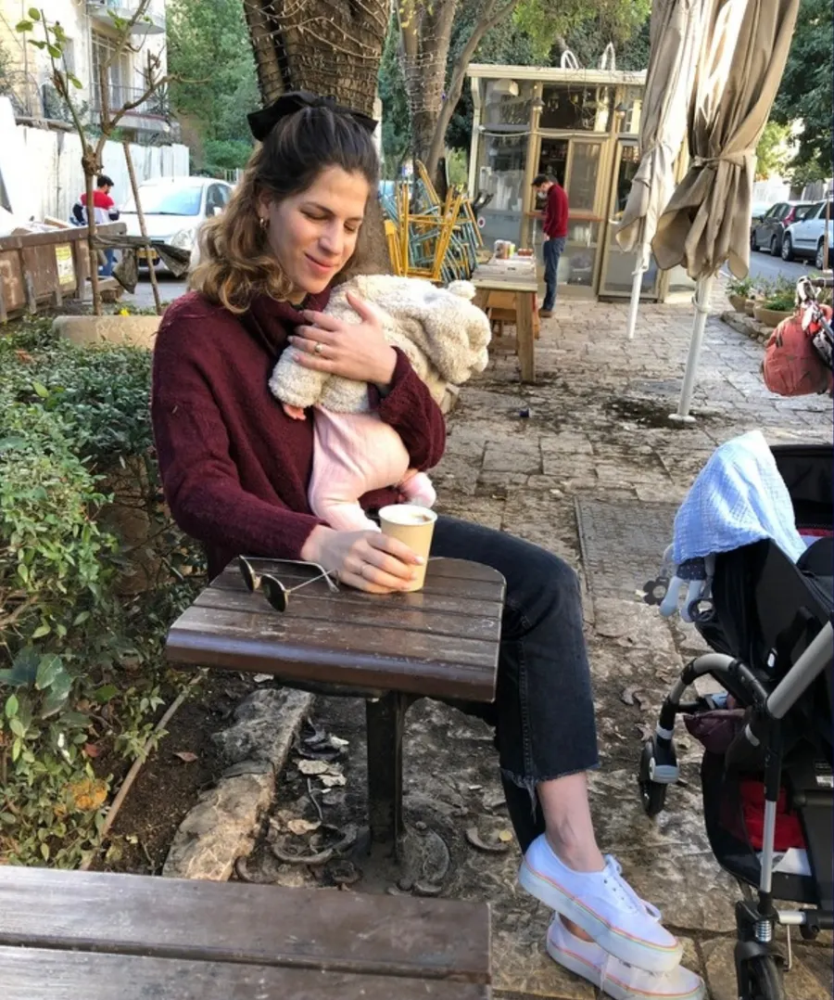
אחרי הלידה
יצאתי ללמוד את מה שאפילו לא ידעתי שאני לא יודעת. וגיליתי שזה פשוט הרבה יותר ממה שחשבתי. אף אחד פשוט לא עשה לי סדר.
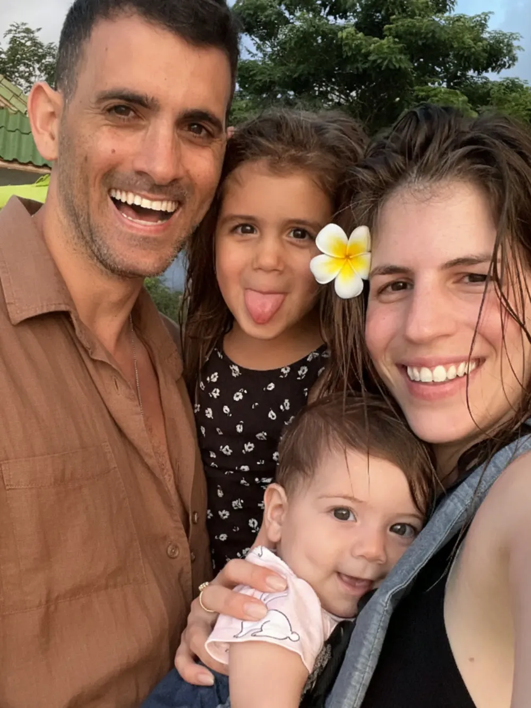
היום
אני נשואה למני, אמא של אלה ואביב. ומה שקרה מאז, תראי בעצמך:
היום
ההון של המשפחה שלנו צמח פי 8.
מאותה הכנסה. באותה רמת חיים.
ההון של המשפחה, 2020 עד היום
להמחשה: 2020 = 1
זה התחיל מלמצוא כספים אבודיםשסתם נזלו בלי ששמתי לב.
זה המשיך בהוראות קבע קטנות100 פה, 100 שם, בהשקעות.
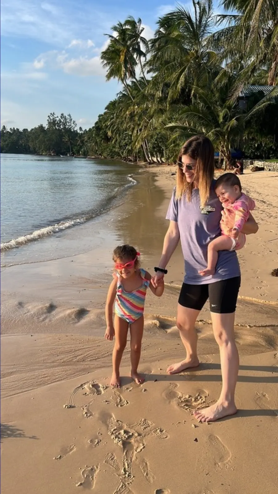
וזה מה שעשיתי לבנות שלי7,000 ₪ בהתחלה, ממענקי לידה ומתנות, ועוד 500 ₪ בחודש בהוראת קבע. בקופת גמל להשקעה, במסלול מנייתי.
ומאז אני מראה למעל 20,000 נשים איך לעשות את זה בעצמן.
400+אמהות בתוכניות של אמא משקיעה
200+תיקי השקעות שנפתחו
₪7M+מושקעים על ידי הקהילה
הליווי של 5.10 התמלא · עכשיו נרשמות ל-28.10
מה גיליתי בדרך
הכסף לא צריך עוד מאמץ. הוא צריך סדר.
היופי בתחום ההשקעות הוא שלא צריך לעשות הרבה כדי להתחיל לייצר כסף.
רוב הנשים מפחדות לסכן כסף של המשפחהולא צריך.
הן מרגישות שזה סופר טכניוזה פשוט לא נכון.
הן חושבות שזה התעסקותודווקא זה הכי הרבה תמורה בהכי פחות זמן.
היום נשים יכולות לסדר את המשפחה שלהן ואפילו לצבור הון של מאות אלפי שקלים, רק מלקחת 300 שקל בחודש שהן שמות על בגדים שהן לא צריכות, ולעשות הוראת קבע שלוקחת פחות מ-3 דקות.
את יכולה להיות ״הגיבורת על״ של המשפחה, זאת ששינתה את העתיד של המשפחה בלי לקחת ממה שיש היום.
את לא צריכה לגעת בכסף שיש לך ולבעלך בעובר ושב
את לא צריכה לגעת בכסף שחסכתם לדירה
את לא צריכה להצטמצם
כשלכל שקל יש מקום ותפקיד, הוא מתחיל לעבוד לבד:
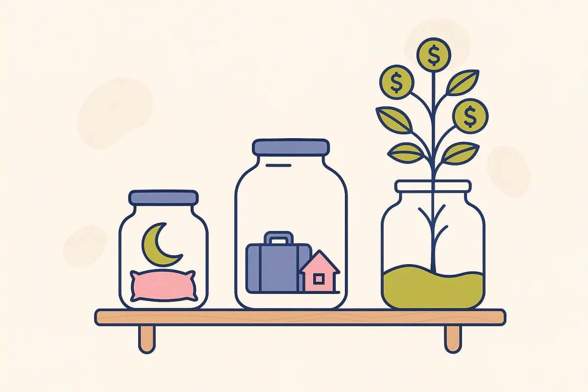
המשכורת נכנסת
↓
מה שצריך לחודשנשאר בעו״ש
קרן חירוםזמינה, לא נוגעים
כסף למטרהדירה, לימודים, חופשה
כסף לילדיםלטווח רחוק
הוראת קבע להשקעותכל חודש, לבד
החלוקה שונה אצל כל אחת. בליווי בונות אותה על המספרים שלך.
אותם 500 ₪ בחודש, במשך 25 שנה
160 אלף ₪בפיקדון בבנק (0.5%)
454 אלף ₪בשוק ההון (8%)
שנים מהיום · אלפי ₪
שוק ההון, 8% בשנהבנק, 0.5% בשנהמה שהפקדת
חישוב: הפקדה חודשית קבועה, לפני מס ודמי ניהול. 8% היא הנחה, קרובה לתשואה ההיסטורית של S&P 500. התשואה לא מובטחת.
וזה לא רק תיאוריה. הכסף של "חיסכון לכל ילד":
על כל 100 ₪ שהופקדו בין 2017 ל-2025, כמה רווח נוסף?
בבנק11.6 ₪
בקופות גמל40.8 ₪
אותו כסף, אותה תוכנית. פי 3.5, רק בגלל איפה הכסף ישב.
מקור: ביטוח לאומי, "חיסכון ארוך טווח לכל ילד וילדה", דוח 2025 (פורסם 28.7.2026). רווח מצטבר מול הפקדות, חישוב שלנו.
ומה עם הפחד להפסיד?
הזמן הוא מה ששומר עלייך
שוק ההון עולה ויורד כל שנה. אבל ככל שמחזיקות יותר זמן, הסיכוי לסיים בהפסד יורד. בכל תקופה של 20 שנה מאז 1928, לא הייתה אפילו אחת שהסתיימה בהפסד.
כמה מהתקופות הסתיימו בהפסד? (S&P 500, 1928 עד 2025)
כמה שנים מחזיקות את ההשקעה
מקור: Damodaran, NYU Stern, תשואות היסטוריות כולל דיבידנדים, עדכון ינואר 2026. ביצועי עבר אינם מבטיחים תשואה בעתיד.
שירה שרף: "איפה הייתי אז ואיפה אני היום. קניתי דירה לילדים שעוד אין לי."
ציד האוצר
אלומה מצאה מעל 200 אלף ₪ שלא ידעה שיש לה
הכל התחיל במשימה הראשונה של הליווי: לחפש כסף שכבר שלך. בממוצע משתתפת מוצאת כ-20,000 ₪. ככה זה נראה אצלה בווטסאפ:
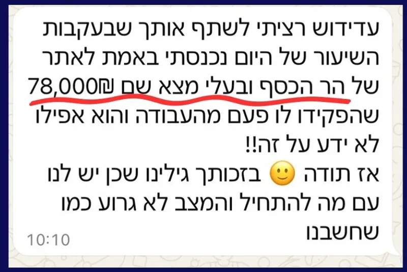
78,000 ₪ שבעלה מצא באתר "הר הכסף". "הוא אפילו לא ידע על זה."
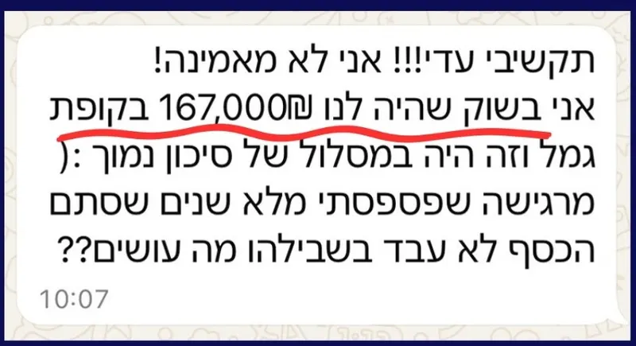
167,000 ₪ שישבו בקופת גמל במסלול שלא התאים לה.
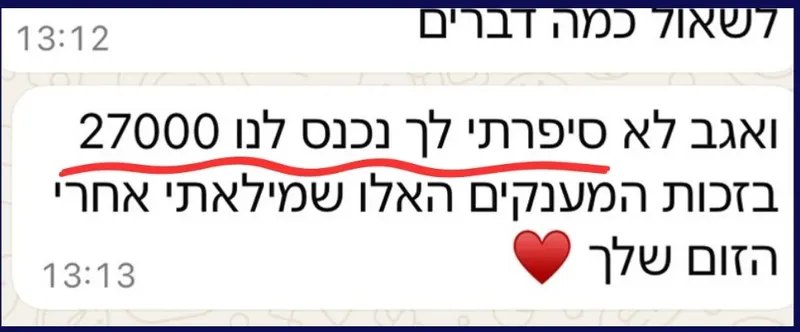
27,000 ₪ ממענקים, אחרי זום אחד.
אלומה מספרת בעצמה: "מצאתי מעל 200 אלף ₪ שלא ידעתי שיש לי."
אז בניתי את הדרך שהייתי רוצה שמישהי תבנה לי. לוקחות את עולם ההשקעות ומפרקות אותו לפעולות קטנות. כל פעם פעולה אחת.
ככה נולד
הליווי של אמא משקיעה
ממפותמגינותמחלקותמפעילות
בשורה אחת: במקום להחליט מחדש בכל חודש, בונות מסילה אחת שבה כל שקל מקבל תפקיד ברור. הוראת הקבע עובדת מעצמה, והכסף של המשפחה שלך ממשיך לעבוד בשקט.
כל מה שאת צריכה, בטלפון שלך. לא צריך לזכור כלום ולא לחפש כלום.
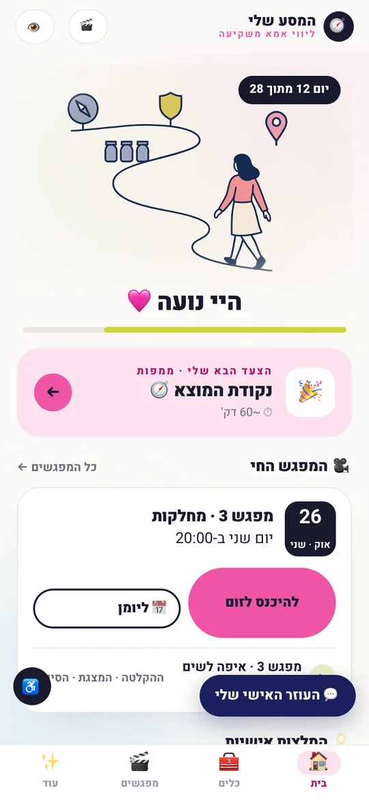
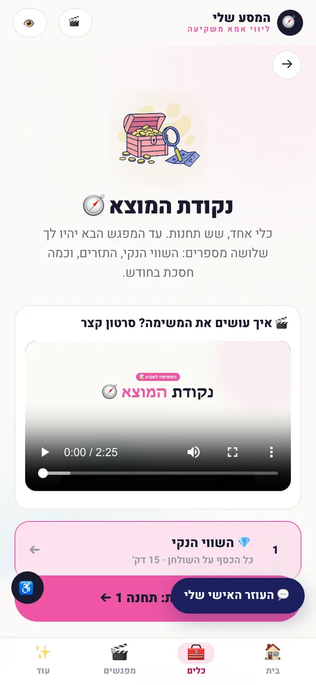
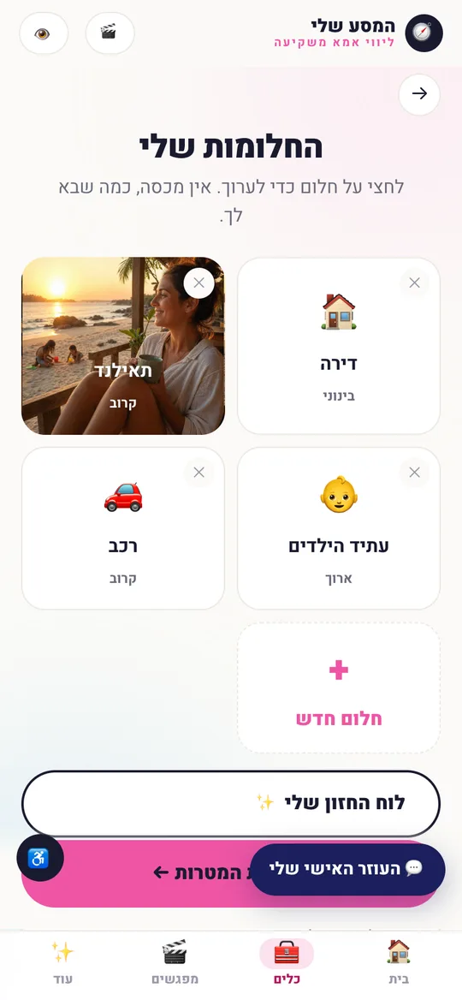
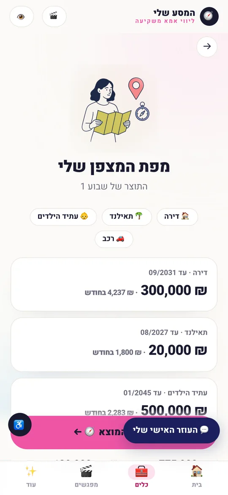
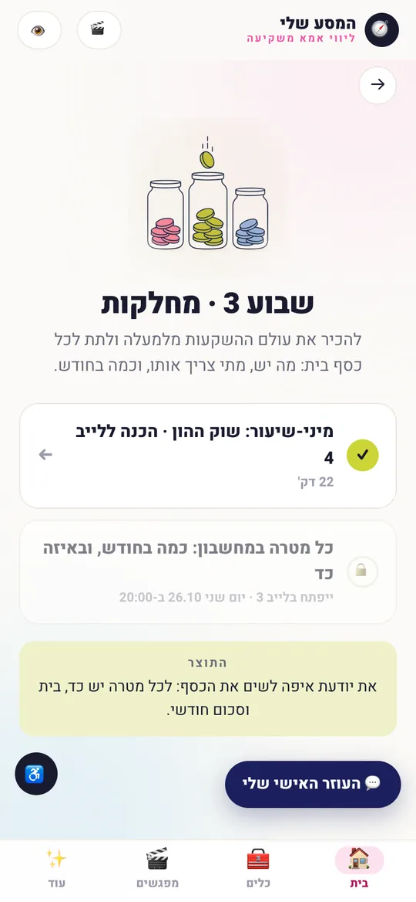
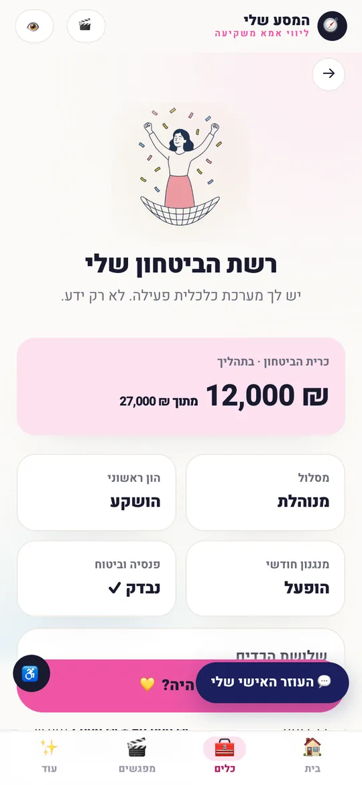
הצעד הבא שלך. אחד.נכנסת ורואה בדיוק מה עושים היום. לא רשימה של 20 דברים.
נקודת המוצאשש תחנות קצרות, ויש לך שווי נקי, תזרים, וכמה את חוסכת בחודש.
החלומות שלך, עם תמונהדירה, חופשה, עתיד הילדים. מזה מתחילים.
כמה בחודש לכל חלוםלכל מטרה יש סכום, תאריך, וכמה להשקיע בחודש.
לכל שקל יש ביתשיעורים קצרים ומחשבון, צעד אחרי צעד.
רשת הביטחון שלךרואה את כרית הביטחון מתמלאת, והמנגנון החודשי פועל.
מסכים אמיתיים מהמערכת, עם נתונים לדוגמה. וגם עוזר אישי בצ'אט, זמין בכל מסך.
28 יום, צעד אחד בכל פעם
מפת הדרכים שלך
באזור האישי שלך תמיד מחכה הצעד הבא. אחד. לא צריך לזכור כלום ולא לחפש כלום.
לפני המפגש הראשון
ציד האוצר
מחפשות כסף שכבר שלך: קופות ממקומות עבודה ישנים, החזרי מס, מענקים, ותשלומים שיורדים בלי ששמת לב.
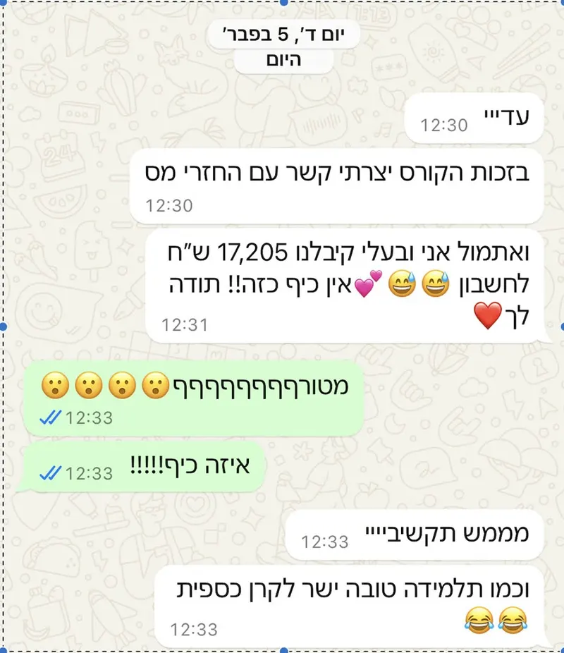
17,205 ₪ החזר מס שנכנס לחשבון, "בזכות הקורס".
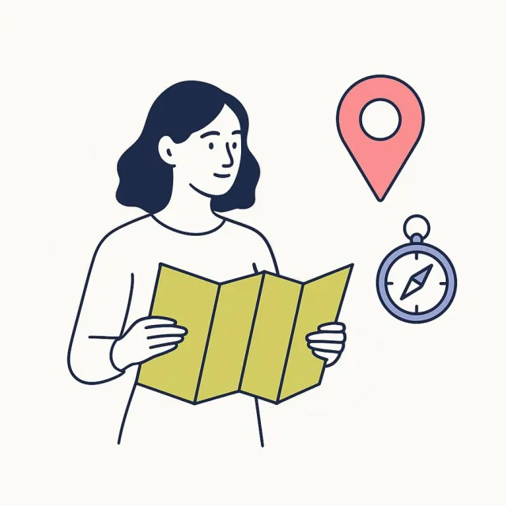
שבוע 1 · ממפות
איפה הכסף שלי?
רואות את כל התמונה במקום אחד: מה יש לכם היום, מה החלומות, ומה המטרות, עם סכום ותאריך לכל אחת.
אדוה ובעלה, אחרי "דייט זוגי" על התזרים: "גילינו שאנחנו בתזרים החודשי בפלוס רציני."
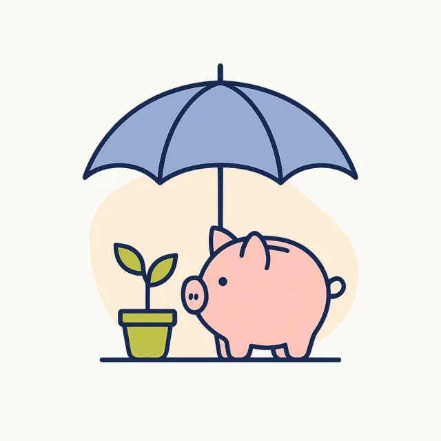
שבוע 2 · מגינות
קודם כל, שקט
בונות קרן חירום במקום הנכון, לפני שנוגעים בהשקעות. ככה שום דבר לא מפחיד.
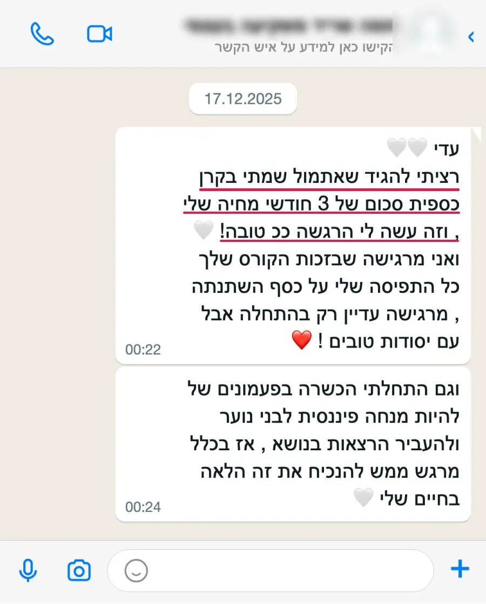
תמה: 3 חודשי מחיה בקרן חירום, אחרי שנים של מינוסים.
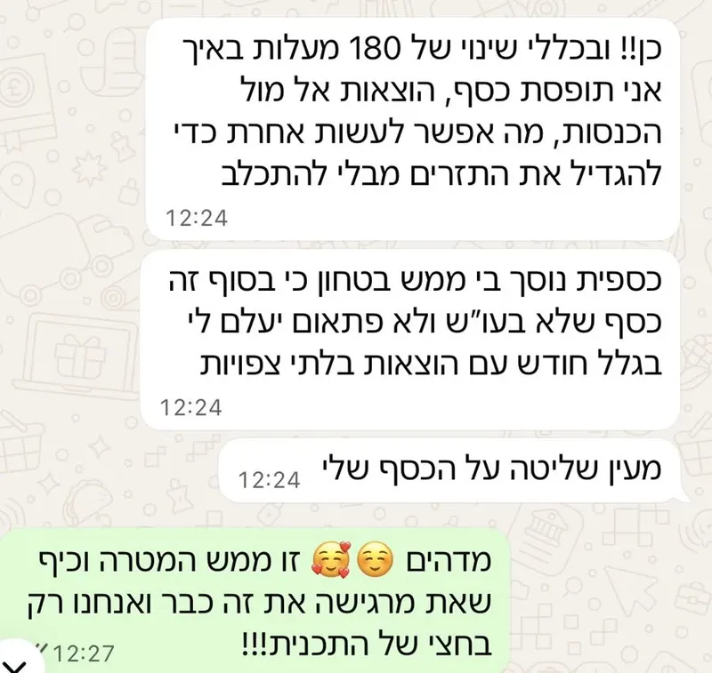
"שינוי של 180 מעלות, ותחושת שליטה על הכסף שלי."
שבוע 3 · מחלקות
לכל שקל יש תפקיד
מחלקות לפי זמן: כסף שתצטרכי בקרוב, כסף לשנים הקרובות, וכסף שלא תיגעי בו 15 שנה. ומבינות איזו השקעה מתאימה לכל אחד.
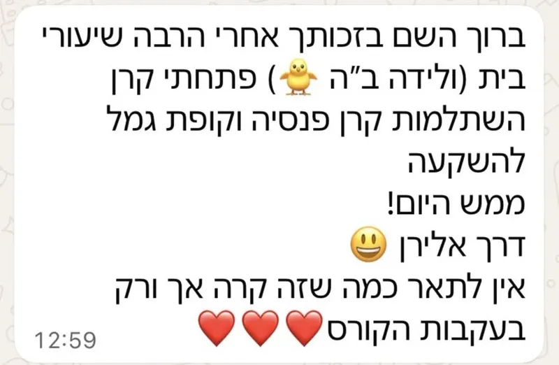
פתחה קרן השתלמות, פנסיה וגמל להשקעה. באותו יום.
שבוע 4 · מפעילות
הוראת הקבע הראשונה
פותחות מה שצריך יחד עם אנשי המקצוע, ויוצרות הוראת קבע פשוטה שמתאימה בדיוק לך.
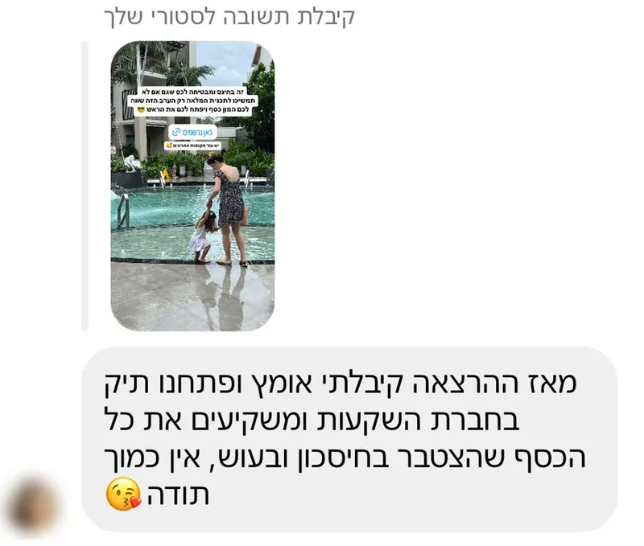
"קיבלתי אומץ ופתחנו תיק." הכסף שישב בעו״ש התחיל לעבוד.
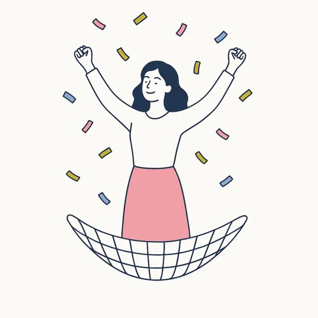
יום 28
המנגנון עובד. לבד.
ההוראה הראשונה יורדת. מעכשיו את בודקת פעם בכמה זמן, ומעדכנת רק כשהחיים משתנים. וגם 200 ₪ שנשארו בסוף החודש כבר יודעים לאן ללכת.
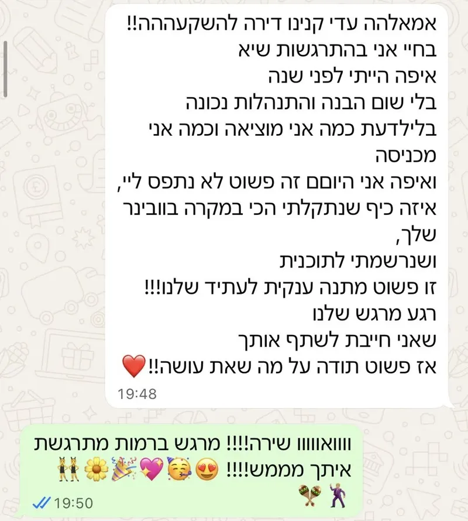
שירה שרף: "אמאלהה עדי, קנינו דירה להשקעה!! איפה הייתי לפני שנה."
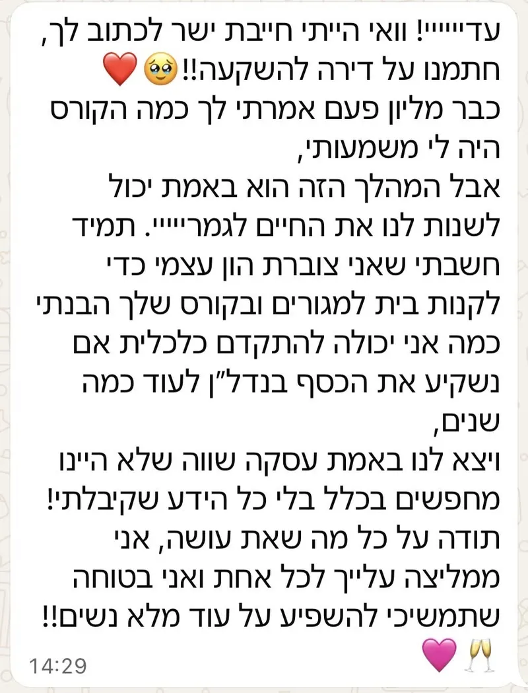
"חתמנו על דירה להשקעה!! עסקה שווה שלא היינו מחפשים בכלל בלי כל הידע שקיבלתי."נועה דולגין: "קניתי עוד דירה להשקעה שלא חשבתי בחיים שבכלל רלוונטית אליי."
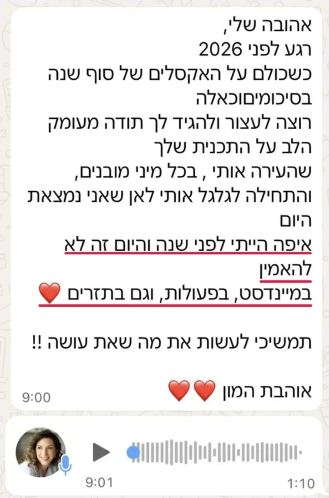
שושי, בסיכום השנה: "איפה הייתי לפני שנה והיום זה לא להאמין. במיינדסט, בפעולות, וגם בתזרים."
כמה זמן זה לוקח לך?לייב אחד בשבוע, שעה עד שעה וחצי, ואחריו משימה של 5 עד 10 דקות. הכל מוקלט ונשאר שלך. היו אצלנו רופאות, נשות הייטק, אמהות בחופשת לידה וסטודנטיות.
רוני, גיסתיכן, גיסתי. ובכל זאת: שכירה במשאבי אנוש שהשפה הזאת הייתה "סינית" בשבילה. "מתחילת הקורס הכפלתי את החיסכון שלי פי שתיים, ואני ובן זוגי חוסכים כל חודש לדירה."לירון בצלאל"בעלי ואני היום מחליטים על השקעות ביחד, ופעם הייתי עוצרת אותו רק כי פחדתי."רותם"הפקדתי גם לקרן השתלמות, גם לקופת גמל, וגם קנינו דירה להשקעה תוך כדי התכנית."שושי"הגדלתי הכנסות פי 2, קניתי דירה נוספת, והגשמתי חלומות."ליאת לנג"פתח אותי ואת בעלי לעולם ההשקעות ושינה לנו את החיים."הדר גלזר"בעלי ואני מדברים על כסף ומחליטים החלטות יחד."רחלי"לא מאמינה שלא ידעתי את הדברים האלה לפני. כמה למדתי, אפילו רק בשיעור אחד."
ביום 28
עם מה את יוצאת מהליווי
הסכום החודשי שלך נקבעאין יותר שאלה מה עושים עם הכסף שנשאר בסוף החודש.
כרית ביטחון נזילה ומוגנתאת לא קמה בבוקר ודואגת מכל הוצאה בלתי צפויה.
הרכב תיק אישי מיועץ מוסמךבלי לנחש מה לקנות. ההרכב מגיע מהמערכת של יפתח וגנר, יועץ השקעות מוסמך.
הוראת קבע שכבר רצהשקט בראש כשהכסף עובר להשקעה בעצמו, חודש אחרי חודש.
פתיחת החשבון היא צעד טכני אחד בדרך, עם בתי ההשקעות השותפים שלנו או במוצר מנוהל, לפי מה שמתאים לך. המערכת שנשארת איתך אחרי, היא התוצאה.
מה יש בפנים
ואף שלב לא לבד
את מקבלת את ההחלטות. הצוות עוזר לך לבצע אותן.
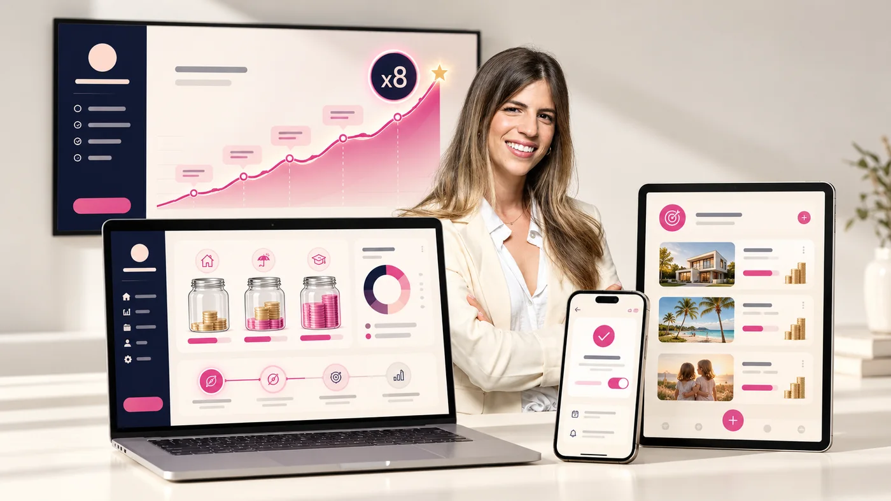
✓
מפגש לייב בכל שבוע. ימי רביעי ב-20:00, מוקלט ונשאר שלך לתמיד.
✓
אזור אישי שמראה לך כל יום מה הצעד הבא.
✓
קבוצת ליווי בווטסאפ. נתקעת מול טופס? שולחת צילום מסך ופותרות יחד.
✓
פגישה אישית 1:1 עם עמית או רות מהצוות: דמי ניהול, מסלולים וכסף שנשכח.
מה מצאנו לאוריה בפגישה האישית: דמי ניהול 0.7% ← 0.1%, ולפנסיה +300,000 ₪. אף אחד לא משנה בשבילך שום דבר. עוד עין מקצועית ממליצה, ואת מחליטה.
3 חודשי ליווי בווטסאפ אחרי הליווי, ולייב שאלות ותשובות פעם בחודששווי 1,500 ₪
כל המדריכים, ההקלטות והתכנים של אמא משקיעהשווי 1,500 ₪
מסלולי המשך לבוגרות: פנסיה, החזרי מס, משכנתא ונדל״ן, לפי התאמהבלי עלות
עוד 28 יום
תדמייני רגע
יום רגיל. בוקר.
הטלפון מצפצף. הודעה מהבנק:
הוראת הקבע ירדה להשקעה.
את מחייכת לעצמך,
כי את יודעת בדיוק לאן היא הלכה.
לכל שקל יש תפקיד.
בערב, שיחה רגועה עם בן הזוג.
בלי מתח. בלי ויכוחים.
הבת שלך שואלת: "מה זו ריבית?"
ואת יודעת בדיוק מה לענות.
את הגיבורת על של המשפחה.
צילומי מסך אמיתיים
מה שמעסיק אותך בכסף, ומה קרה למישהי שהרגישה בדיוק כמוך
לכל משפט שחוזר אצלכן שוב ושוב צירפתי הודעה אחת אמיתית, שמראה מה השתנה אצלה.
"אני יודעת כבר כמה שנים שאני צריכה להתחיל להשקיע ואני עוד לא עשיתי את זה, ממקום של חוסר ידע והבנה, ואני פשוט דוחה ודוחה."
הפחד להתחיל נעלם ברגע שמבינים את השפה, ומגלים שזה הרבה יותר פשוט ממה שחשבת.
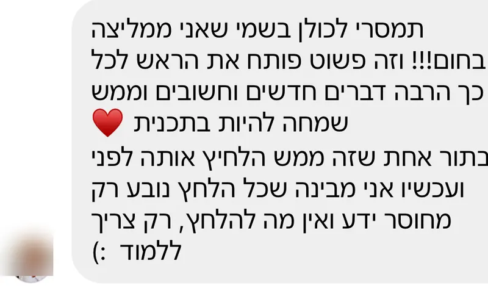
"בתור אחת שזה ממש הלחיץ אותה לפני: עכשיו אני מבינה שכל הלחץ נובע רק מחוסר ידע."
"אני לא יודעת איך להצליח לחסוך כל חודש, ואיך למנף את החסכונות של הילדים."
הילד רק בן 10 חודשים, וכבר יש לו הוראת קבע שמפקידה לקופת גמל.
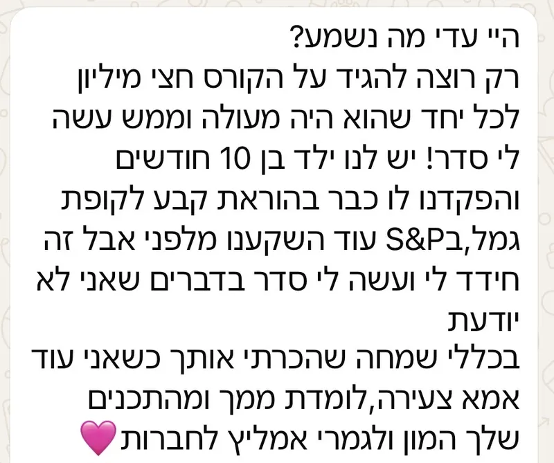
"יש לנו ילד בן 10 חודשים והפקדנו לו כבר בהוראת קבע לקופת גמל. עשה לי סדר בדברים שלא ידעתי."
"שהמשכורת נכנסת ונבלעת מהר."
ברגע שהיא ראתה לאן הכסף הולך, היא יצאה מהמינוס ונמצאת בתזרים חיובי.
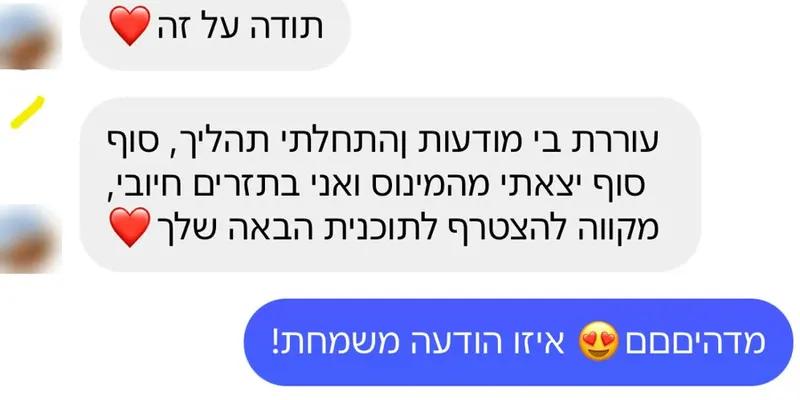
סוף סוף יצאה מהמינוס, ובתזרים חיובי.
"מה שהכי מעסיק אותי בכסף זה עצם העובדה שהוא מעסיק אותי כל הזמן."
השקט מגיע ברגע שמפרקים את הכל לפעולות פשוטות, והכסף מפסיק לנהל לך את המחשבות.
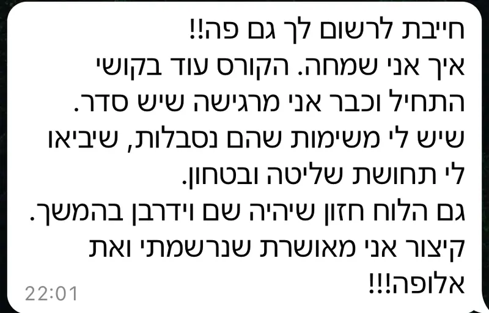
"הקורס בקושי התחיל וכבר אני מרגישה שיש סדר. משימות נסבלות, שיביאו לי תחושת שליטה וביטחון."
"הדבר שהכי מעסיק אותי זה שאני לא מצליחה לחסוך כסף כבר כמה שנים. ועכשיו יש לי ילדה בדרך."
לפני שמתחילים לחסוך מהשוטף, בודקים איזה כסף שמגיע לך כבר מחכה בחוץ.
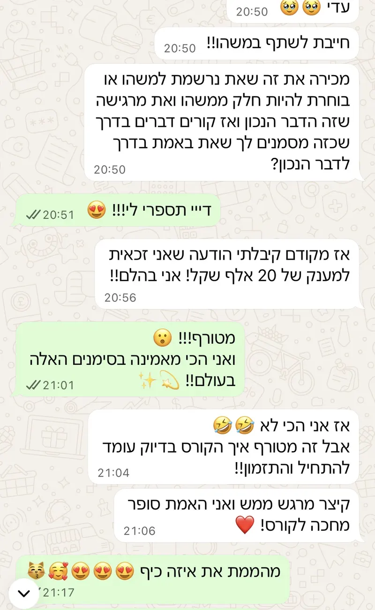
שבוע אחרי שנרשמה: "קיבלתי הודעה שאני זכאית למענק של 20 אלף שקל! הקורס עומד להתחיל, והתזמון!!"
"כאם יחידנית הכי מעסיק אותי איך להצליח גם לתת להם חיים מלאים שלא יחסר כלום, וגם להצליח לחסוך להם כסף לעתיד."
את לא צריכה לבחור בין ליהנות מהחיים היום לבין לבנות להם רשת ביטחון לעתיד.
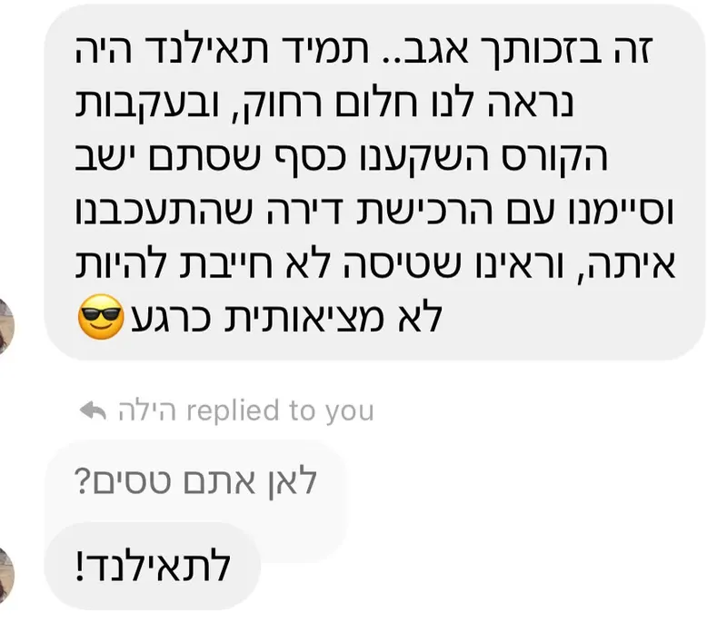
השקיעו כסף שסתם ישב, סיימו רכישת דירה. ותאילנד.
"הכי מעסיק אותי שאני חוסכת לא יעיל. יש כסף, אבל הוא בפק״מים ולא נותן עבודה."
כשעושים סדר אמיתי בכל מה שכבר צברת, הכסף מפסיק לעמוד במקום ומתחיל לעבוד.
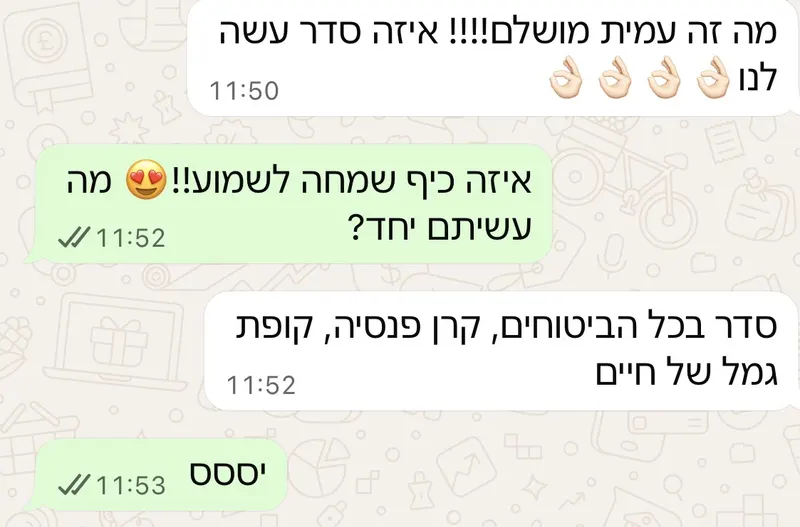
אחרי הפגישה האישית: "איזה סדר עשה לנו! סדר בכל הביטוחים, קרן הפנסיה וקופת הגמל."
לפתוח עוד 20 צילומי מסך
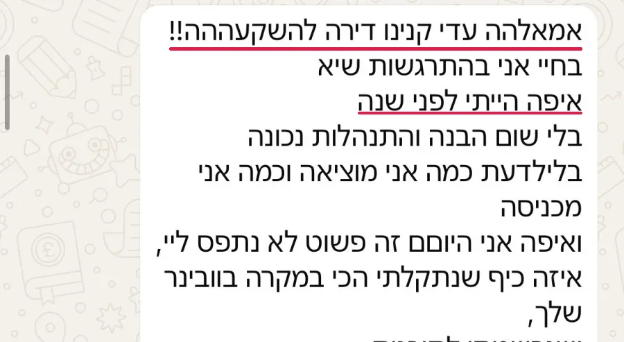
שירה: "איפה הייתי לפני שנה, בלי שום הבנה והתנהלות נכונה. היום אני יודעת כמה אני מוציאה וכמה אני מכניסה."
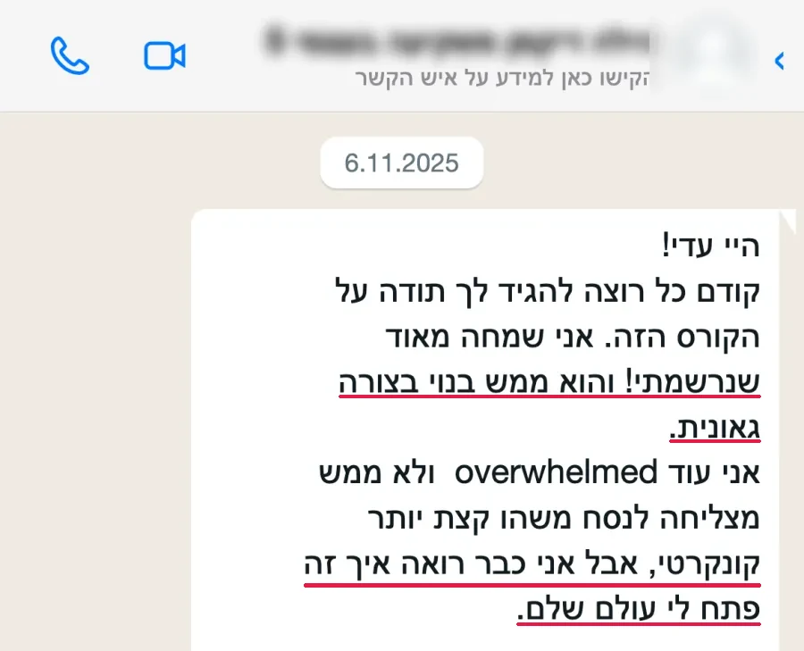
"בנוי בצורה גאונית. אני כבר רואה איך זה פתח לי עולם שלם."
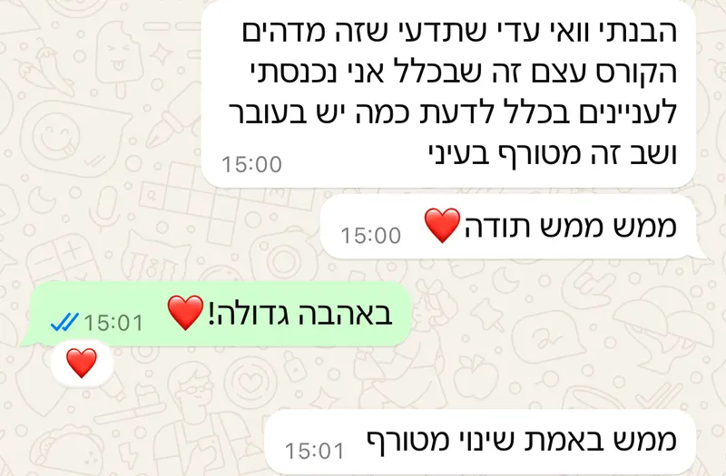
"לדעת כמה יש בעובר ושב זה מטורף בעיניי. ממש באמת שינוי מטורף."
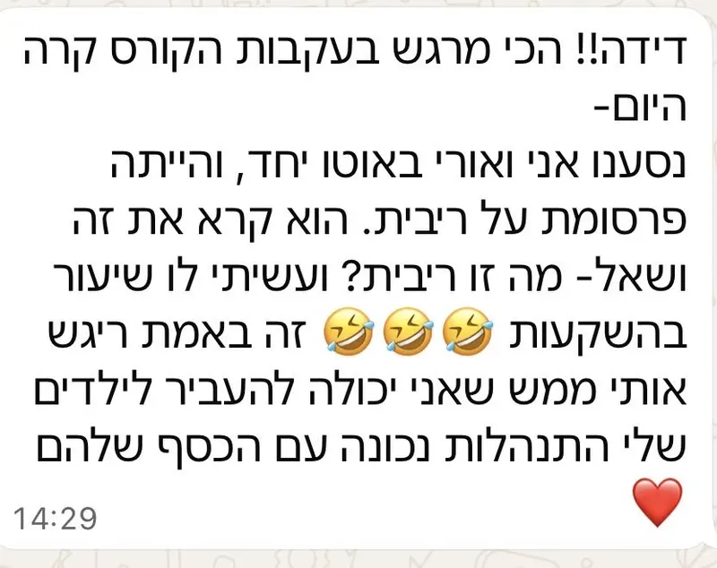
הילד שאל מה זו ריבית, וקיבל שיעור מאמא.
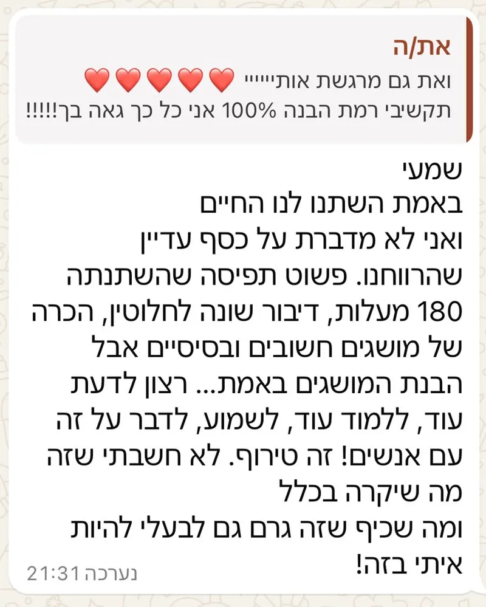
"באמת השתנו לנו החיים." וגם בעלה איתה בזה."ההשקעה הכי טובה שעשינו."
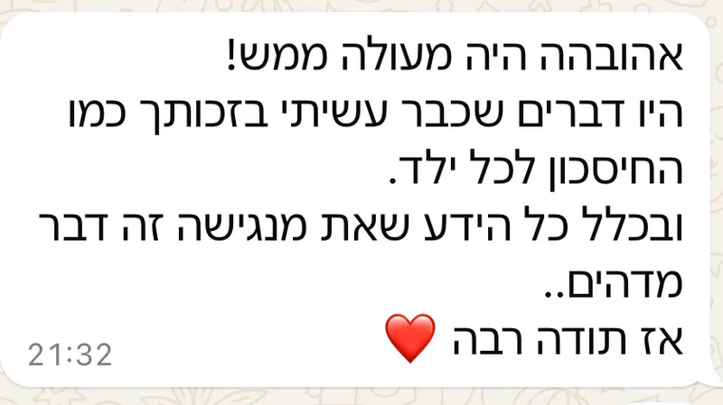
"היו דברים שכבר עשיתי בזכותך, כמו החיסכון לכל ילד."
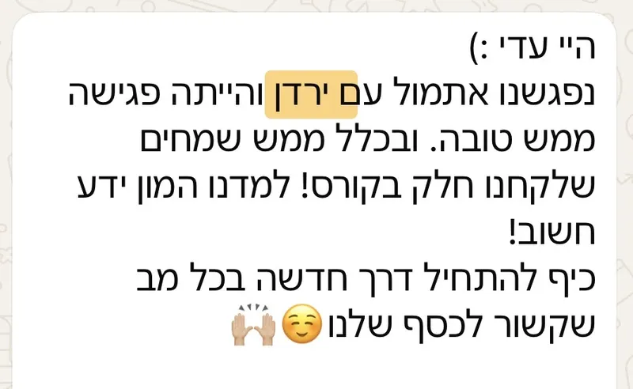
זוג: "למדנו המון. כיף להתחיל דרך חדשה בכל מה שקשור לכסף שלנו."
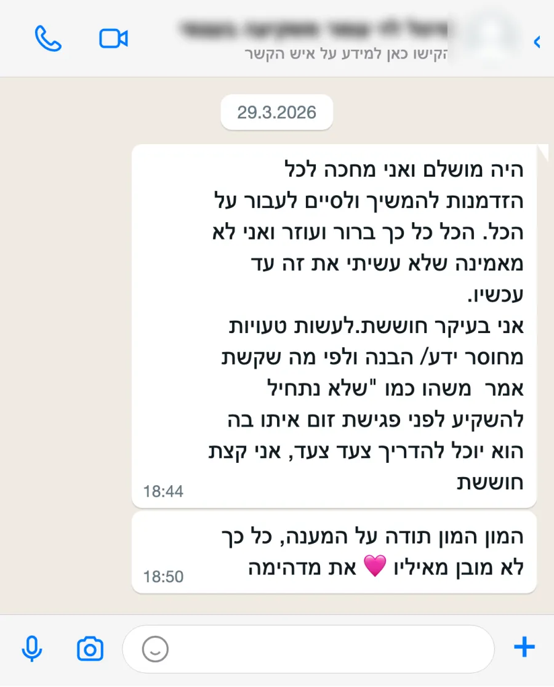
"הכל כל כך ברור ועוזר. לא מאמינה שלא עשיתי את זה עד עכשיו."
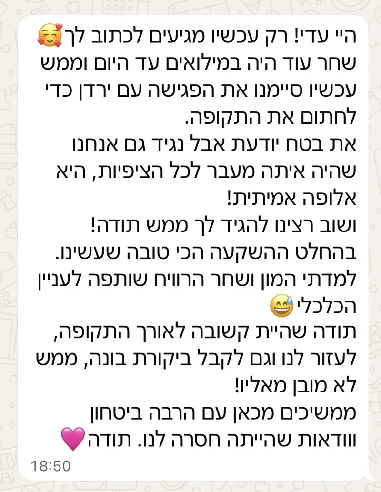
רחלי, אחרי הפגישה האישית: "בהחלט ההשקעה הכי טובה שעשינו. למדתי המון."
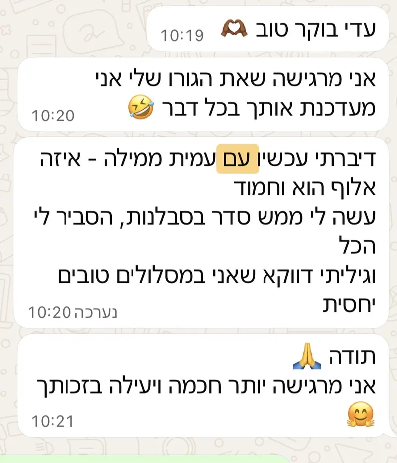
אחרי הפגישה האישית: "עשה לי ממש סדר בסבלנות, וגיליתי שאני במסלולים טובים. מרגישה יותר חכמה ויעילה."
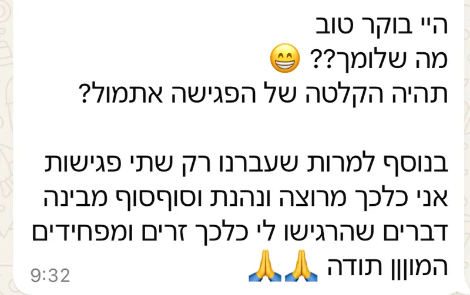
"עברנו רק שתי פגישות, וסוף סוף מבינה דברים שהרגישו לי כל כך זרים ומפחידים."
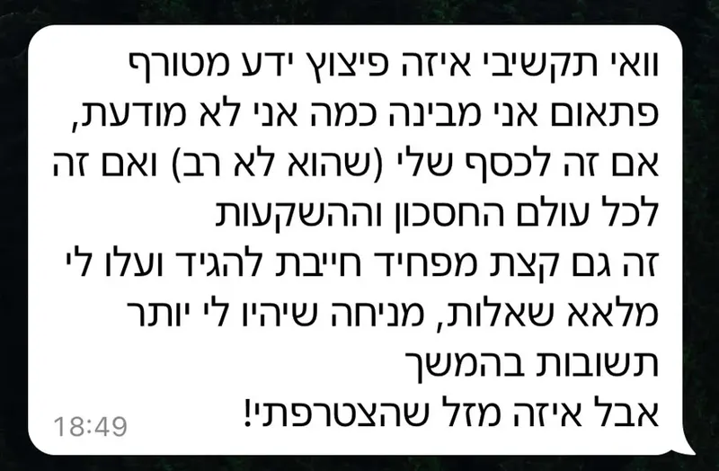
"שיניתי את התודעה שלי לגמרי."
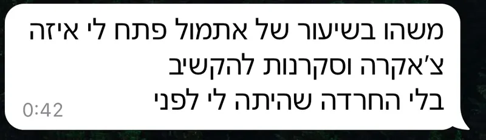
"משהו בשיעור של אתמול פתח לי סקרנות להקשיב בלי החרדה שהייתה לי לפני."
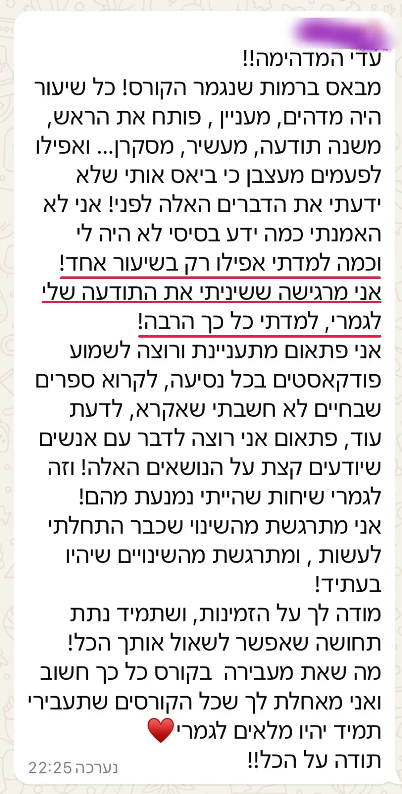
ליאת: "אני מרגישה ששיניתי את התודעה שלי לגמרי. פתאום אני רוצה לדבר עם אנשים על הנושאים האלה."
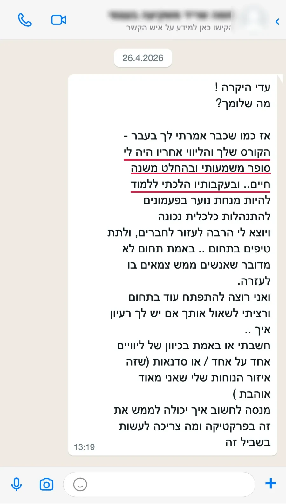
תמה: "הקורס והליווי אחריו היו סופר משמעותיים ובהחלט משנה חיים." והלכה ללמד את זה הלאה."מרגיש באמת שיש קבוצת בנות איכותית וסביבה מקדמת.""התחום הפיננסי הפחיד אותי. אתן גורמות לי להתחיל לאהוב את זה.""גם עושה סדר, וגם כיף לדעת שיש דברים שעשינו נכון עד היום. רמה ממש גבוהה.""שווה כל שקל. קיבלתי מתנה."
בשביל מי זה
הליווי נבנה בדיוק בשבילך אם:
✓
יש לך כסף שיושב, ואת לא יודעת מה לעשות איתו.
✓
את חוסכת לילדים, ורוצה לדעת שזה באמת הדבר הנכון.
✓
אתם מרוויחים יפה, ובסוף החודש לא נשאר.
✓
את מתחילה מאפס, ורוצה שמישהי תעשה לך סדר.
✓
יש לך שעה, שעה וחצי בשבוע, בארבעת השבועות הקרובים.
✓
או שדווקא הכל אצלך עומד להשתנות, לימודים או עבודה חדשה, ואת רוצה להיכנס לתקופה הזו עם מסגרת מוכנה.
בונוס למי שנרשמת עד יום רביעי 28.10 ב-20:00
הסוכן האישי של המערכת, זמין לך 24/7
הרכב התיק האישי שלך כלול בליווי לכל משתתפת: המערכת של יפתח וגנר, יועץ השקעות מוסמך, בנויה על ההמלצות המקצועיות שלו. מי שנרשמת עד המועד מקבלת גם את הסוכן האישי שלה: שאלה, שינוי בחיים, החלטה, ויש תשובה מיד. במקום לבחור לבד מתוך שבעה סוגים של S&P 500, את מקבלת את ההמלצה שמתאימה לך.
00ימים
00שעות
00דקות
ההשקעה שלך
המחזור הקרוב מתחיל ב-28.10
השווי של כל מה שאת מקבלת: 26,000 ₪המחיר שבו הליווי נמכר בפעם הקודמת: 4,800 ₪
3 × 999 ₪
או 2,800 ₪ בתשלום אחדהנחה של 197 ₪
זה המחיר הנמוך ביותר שהליווי הזה יהיה. בליוויים הבאים הוא עולה.
100% אחריות על התהליךעברת את הליווי, הגעת למפגשים, ולא יצאת עם מפת דרכים ברורה? מקבלת החזר מלא. אני אוהבת כסף שמח :)
שיחת ייעוץ, בלי עלות
בואי נבדוק ביחד שזה מתאים לך
משאירה פרטים, ודפני מהצוות של אמא משקיעה חוזרת אלייך לשיחה קצרה. בודקות איפה את היום ומה הצעד הנכון לך, ואם הליווי מתאים, שומרות לך מקום במחזור של 28.10.
1משאירה שם וטלפון. לוקח דקה.
2דפני חוזרת אלייך לשיחה של כ-15 דקות, בדרך כלל עוד באותו יום.
3אם זה מתאים, המקום שלך במחזור של 28.10 שמור, במחיר הזה.
✓
תודה, ! הפרטים אצל דפני.
היא חוזרת אלייך בהקדם, בדרך כלל עוד באותו יום (בימי עבודה). שימי לב לשיחה ממספר שאולי לא מוכר לך.
בינתיים, התשובות של עדי לשאלות הנפוצות מחכות לך בצ'אט כאן למטה 👇
שאלות שאתן שואלות אותי
יש לך שאלה? אנחנו כאן בשבילך :)
צ'אט AI שעונה עם התשובות של עדי, במילים שלה.
הצ'אט של עדיהתשובות של עדי סומך
AI
היי 💛 כאן הצ'אט של אמא משקיעה. כל התשובות כאן הן של עדי, במילים שלה. לחצי על שאלה למטה.